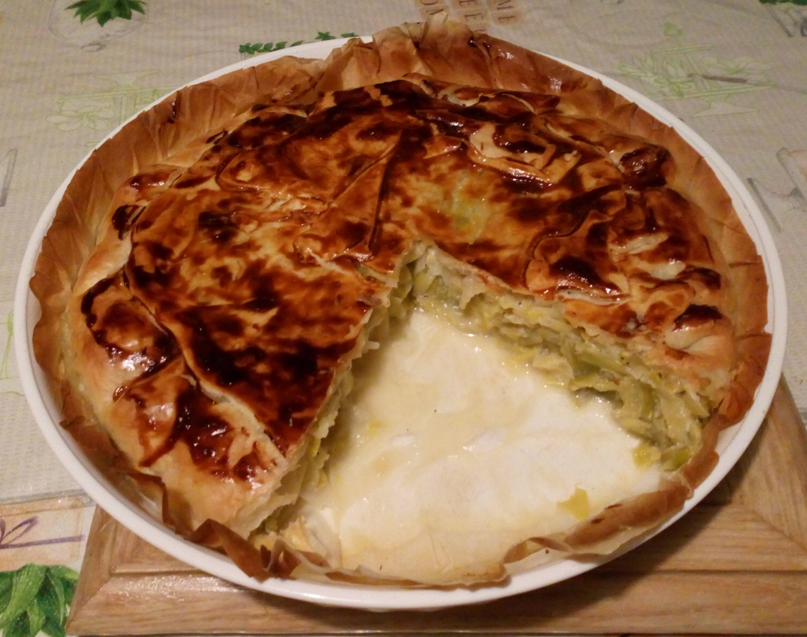

Quiche aux poireaux

Description
Facile à réaliser, ce plat permet de nourrir toute la famille.
Délicieux, tout le monde vous en réclamera encore
Ingrédients
- Poireaux
- Créme
- Lait
- Lardons
- Oeufs
- Pâtes Brisé
Étapes
- Faire cuire les poireaux couper en rondelles à la vapeur
- Faire cuire les lardons
- Dans un saladier, ajouter les oeufs, la créme, le lait
- Ajoutez du sel et poivre à l'appareil ainsi crée
- Y ajouter les lardons et le poireau
- Etaler la pates dan sun moule à tartes
- Verser la préparation sur la pâte
- Enfourné